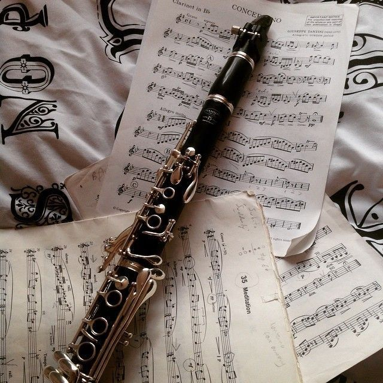
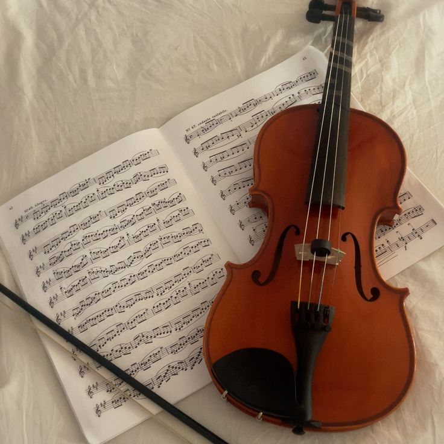
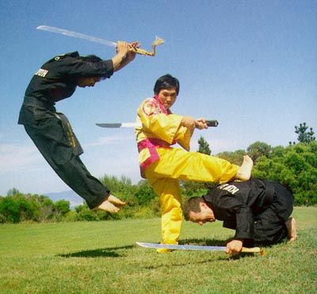
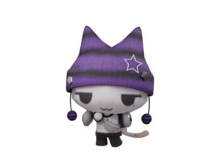
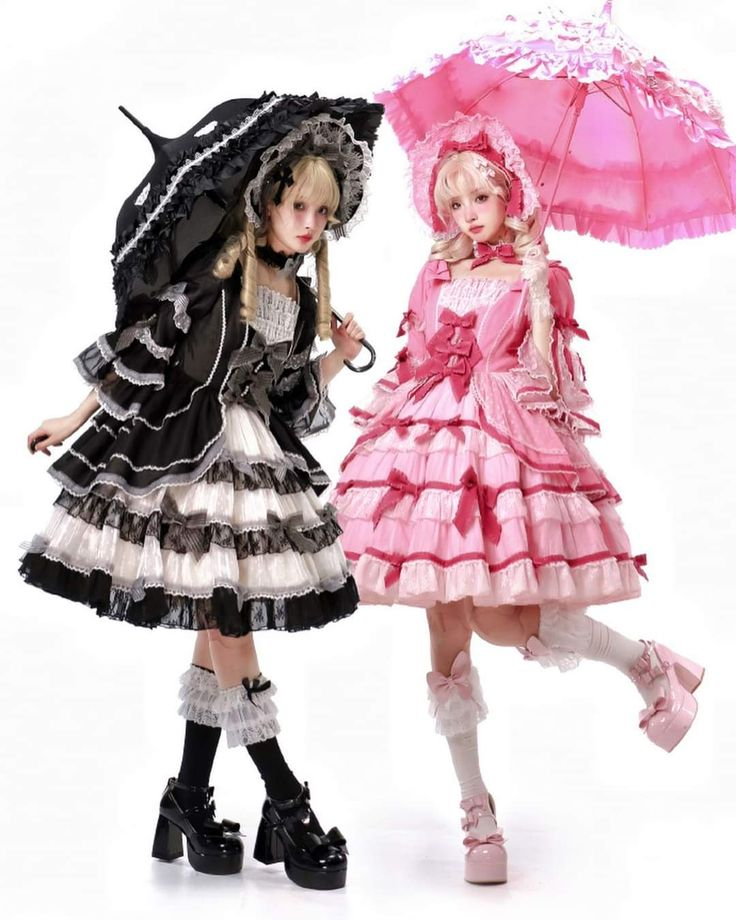
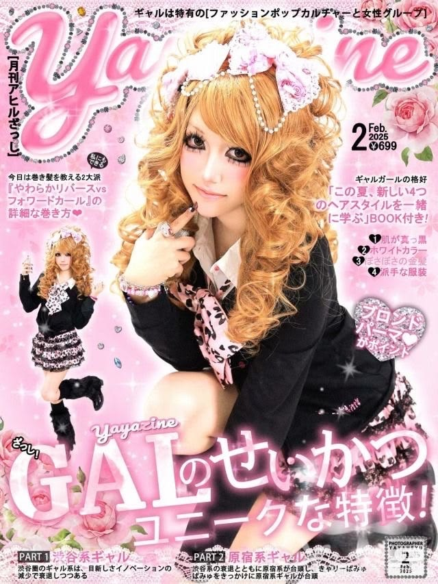
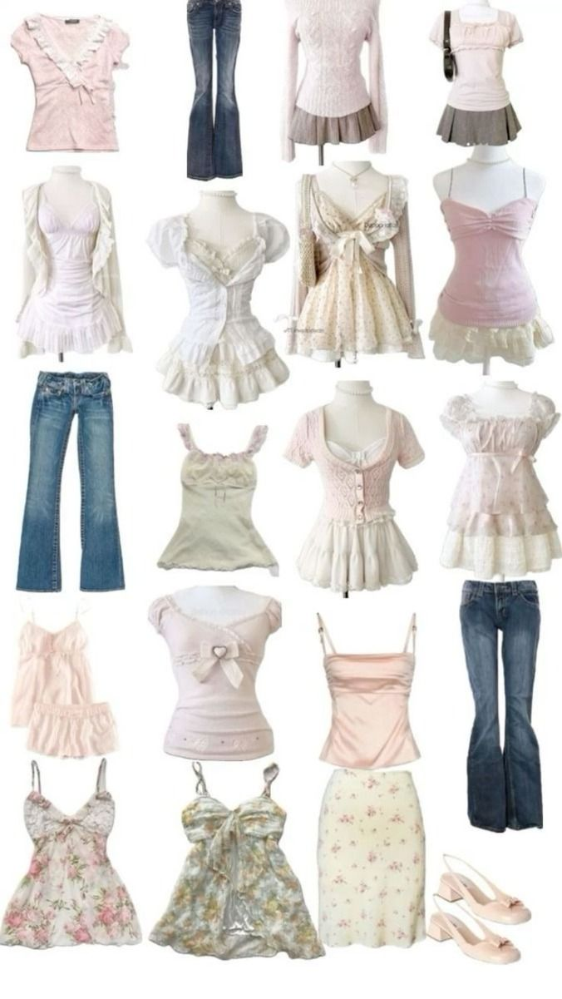
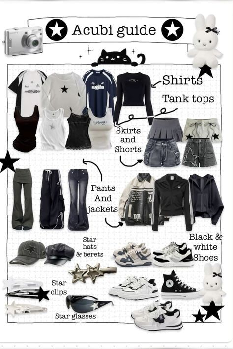
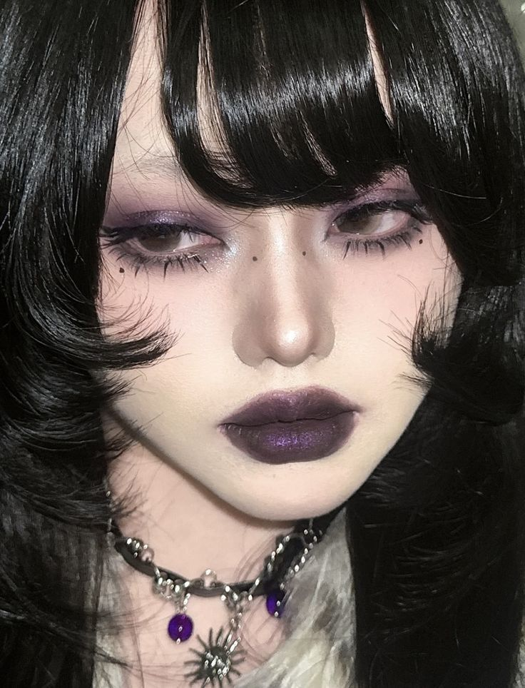

ACTIVITIES
Intruments


I played few intruments in elemetary school because my school had mandatory classes. I remember starting with the clarinet then moving on to the violin because I liked it more and I had a crush on someone in the violin class. Even though I never learned how to read notes I still really enjoyed my time in the orkestras where we got to play with the whole school
Golf
Golf was the first sport I actively played. I had lessons on and off for about 3 years and I even convinced my friend to take those lessons with me. I don't take lessons anymore these day but I would like to go back to a golf course and play a few sets with that friend.
Kul Sool Won

After I quit golf I joined Kuk Sool Won because I remember going to this festival and seeing a really impressive Taekwondo performace. I thought "Wow thats so cool. I wanna be able to do that" so I looked up taekwondo classes in my neighbourhood. But at that time I was watching Kobra Kai so that scared me off of martial arts and I put off joining Taekwondo. That's when I found out about Kuk Sool Won and I was like "Damn that looks cool too" so I joined
Learn More
FASHION
-
LOLITA
-
GYARU
-
HIMEKAJI/COQUETTE
-
MAKEUP
Lolita

I've only been wearing lolita for about a year so I don't have that many pieces. I also don't wear them daily but just on occasions I think suits them. Like not to someone birthday party but to a museum or a fairytale themed amusment park or a castle. I don't see lolitas in public often outside of events so didn't really realise how much it stood out until I saw someone else wearing it. I mostly buy my pieces second-hand because its really expensive. I also like the brands on taobao because those tend to be more affordable than the japanese brands.
Gyaru

I've never actually worn full gyaru before but I've done a few gyaru like outfits. I don't really wear makeup often but a big part of gyaru is the makeup. I'm already doing research and gathering pieces so that I can make my gyaru debut. I'm going to comiccon this year and since I don't cosplay maybe I'll wear it there
Shops
Shoujo girl/Acubi


This style is what I wear on a daily basis. I don't really know what to call it because it's a mix of different softcore, dollete, streetwear, and acubi aesthetics. I typically get ideas from stuff I see on pinterest or the people I follow. These days I'm really into shoujo girls and someone said my outfits reminded them of Nana so atleast I know I'm on the right track.
Shops:
- Remolacha
- Sugarplumstore
- Mikumn Store
Inspirations:
- Ms prettyandpink
- Tianakun
- Angeldust_222
- Dhawanichugh
Makeup

As I previously said I dont wear makeup often but when I do wear it I try to have a specific theme or vibe I want it to look like. I love lenses so I have like five different colors I like to incorparate. I unfortunetly have sensitive eyeballs so I try not to wear them too often lest I damage my eyes. I really love douyin, ulzzang, goth, gyaru and vkei makeup styles so I practice at home and atleast try to make it work my features. Some how it ends up looking like a different style than I planned but practice makes perfect I guess.
Refrences
- Ghoul in Japan
- Moriisgal
- Wearydoll